사인과 코사인은 각도를 길이 비율로 바꾼다
사인과 코사인은 처음부터 원의 좌표를 뜻하는 기호가 아닙니다. 출발점은 직각삼각형에서 각도 하나가 정해졌을 때 생기는 변의 길이 비율입니다.
1. 각도 θ를 기준으로 변에 이름을 붙인다
직각삼각형에서 먼저 살펴볼 각도 θ를 하나 고릅니다. 그러면 그 각도를 기준으로 세 변의 이름이 결정됩니다.
θ의 맞은편 변은 사인에, θ에 붙어 있는 인접한 변은 코사인에 사용합니다. 빗변은 언제나 직각의 맞은편에 있는 가장 긴 변입니다.
따라서 사인과 코사인은 변의 길이 자체가 아니라 빗변 전체 중 세로·가로 방향이 각각 차지하는 비율입니다. 위의 3-4-5 삼각형에서는 sin θ=3/5, cos θ=4/5입니다.
2. 왜 삼각형의 크기가 아니라 각도의 함수일까?
같은 각도 θ를 가진 직각삼각형들은 크기가 달라도 서로 닮았습니다. 모든 변이 같은 배수로 커지기 때문에 변끼리 나눈 비율은 변하지 않습니다.
실제 길이는 달라도 맞은편/빗변과 인접변/빗변은 같습니다. 그래서 각도 θ를 입력하면 사인과 코사인 값이 하나씩 결정됩니다.
입력각도 θ
사인 함수θ → sin θ = 맞은편/빗변
코사인 함수θ → cos θ = 인접변/빗변
핵심삼각형 크기가 달라도 같은 θ이면 같은 결과
3. 빗변을 1로 만들면 단위원의 좌표가 된다
빗변의 길이를 정확히 1로 만들면 나누기 1은 값을 바꾸지 않습니다. 따라서 cos θ는 가로 길이 자체가 되고, sin θ는 세로 길이 자체가 됩니다.
그러므로 반지름이 1인 원 위의 점을 (cos θ, sin θ)라고 표현할 수 있습니다. 바로 다음 그림은 이 직각삼각형을 단위원 안에 놓은 모습입니다.

빗변이 반지름 1입니다. 따라서 가로 길이가 곧 cos θ, 세로 길이가 곧 sin θ가 되어 원 위의 점은 (cos θ, sin θ)가 됩니다.
4. 피타고라스 정리와의 관계
빗변이 1인 직각삼각형에 피타고라스 정리를 적용하면 가로² + 세로² = 1²입니다. 가로가 cos θ, 세로가 sin θ이므로 다음 관계가 항상 성립합니다.